Workshop di gioielli a Torino e dintorni
Workshop per creare gioielli in argento, ottone, porcellana e altri materiali a Torino e dintorni.
Cerca tutti i workshop21 attività in programma · aggiornato il 2 novembre 2026
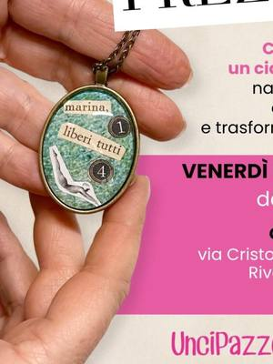
ven6novGioielliRitagli Preziosi: un ciondolo dal collagevenerdì 6 novembre, 18:00–20:00Rivarolo Canavese (TO) · 45 €con Punto fatto a mano per UnciPazzo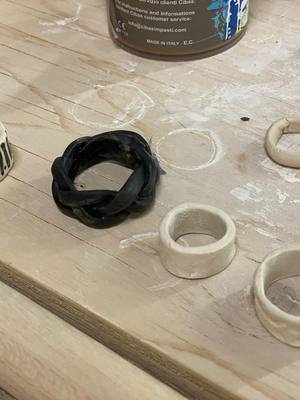
dom8novCeramicaWorkshop di gioielli in porcellanadomenica 8 novembre, 15:00–17:00San Salvario (TO) · 48 €con Diletta per Pottery Lab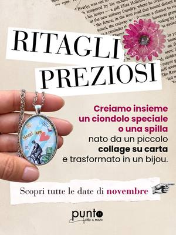
ven13novGioielliRitagli Preziosi: un ciondolo dal collagevenerdì 13 novembre, 18:00–20:00Torinocon Punto fatto a mano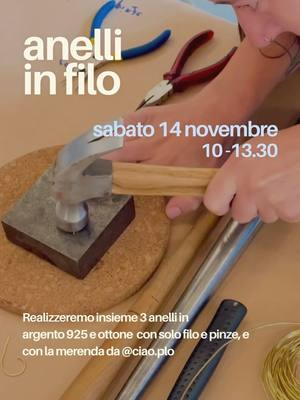
sab14novGioielliAnelli in filo: argento e ottonesabato 14 novembre, 10:00–13:30San Salvario (TO)con Manibargè sab14novGioielliGioielli in origami: orecchini di cartasabato 14 novembre, 15:00–17:00Santa Rita (TO)con Aland Art Studio per Anima Atelier
sab14novGioielliGioielli in origami: orecchini di cartasabato 14 novembre, 15:00–17:00Santa Rita (TO)con Aland Art Studio per Anima Atelier- sab14novGioielliRitagli Preziosi: una spilla dal collagesabato 14 novembre, 15:00–17:00Torinocon Punto fatto a mano
 mar17novGioielliCrea il tuo talismano: ciondolo personalemartedì 17 novembre, 20:30Santa Rita (TO)con Nume Olistica per Anima Atelier
mar17novGioielliCrea il tuo talismano: ciondolo personalemartedì 17 novembre, 20:30Santa Rita (TO)con Nume Olistica per Anima Atelier sab21novGioielliCrea il tuo gioiello: orafa per un giornosabato 21 novembre, 10:00–12:00Pinerolo (TO) · 115 €con Aurum Bottega per NODO Concept Space
sab21novGioielliCrea il tuo gioiello: orafa per un giornosabato 21 novembre, 10:00–12:00Pinerolo (TO) · 115 €con Aurum Bottega per NODO Concept Space sab21novGioielliWorkshop del Carillon: orecchini in argillasabato 21 novembre, 14:30Mondovì (CN) · 30 €con ImOrecchini per Caffè il Carillon
sab21novGioielliWorkshop del Carillon: orecchini in argillasabato 21 novembre, 14:30Mondovì (CN) · 30 €con ImOrecchini per Caffè il Carillon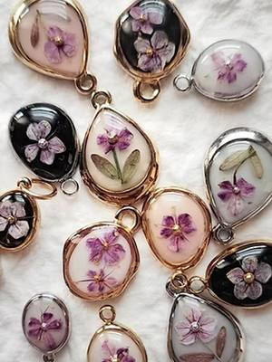
sab21novGioielliGioielli botanici: fiori veri nella resinasabato 21 novembre, 14:30–18:30Villar Perosa (TO) · 40 €con Riflessi di Casa- sab21novGioielliGioielli in origami: orecchini di cartasabato 21 novembre, 15:00–17:00Santa Rita (TO)con Aland Art Studio per Anima Atelier
- mar24novGioielliCrea il tuo talismano: ciondolo personalemartedì 24 novembre, 20:30Santa Rita (TO)con Nume Olistica per Anima Atelier
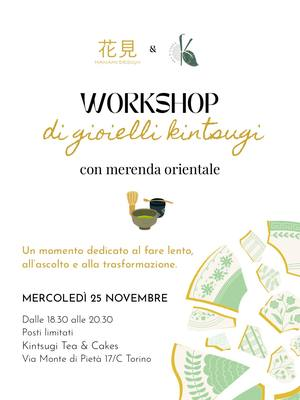
mer25novCeramicaWorkshop di gioielli kintsugi: merenda orientalemercoledì 25 novembre, 18:30–20:30Centro (TO) · 55 €con Hanami Design- ven27novGioielliRitagli Preziosi: una spilla dal collagevenerdì 27 novembre, 18:00–20:00Torinocon Punto fatto a mano
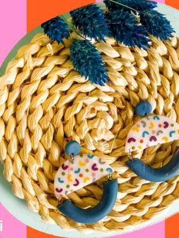
sab28novGioielli+ Fimo - Fomo: orecchini e spille in fimosabato 28 novembre, 15:00–19:00Pozzo Strada (TO) · 45 €con Litz per BlaBlanche Lab- sab28novGioielliRitagli Preziosi: un ciondolo dal collagesabato 28 novembre, 15:00–17:00Torinocon Punto fatto a mano
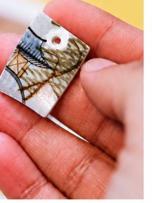
dom29novCeramicaWorkshop di gioielli: kintsugi su ceramicadomenica 29 novembre, 11:00–13:00Santa Rita (TO)con Hanami Design per Anima Atelier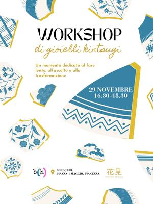
dom29novCeramicaWorkshop di gioielli kintsugi: un gioiello doratodomenica 29 novembre, 16:30–18:30Pianezza (TO) · 55 €con Hanami Design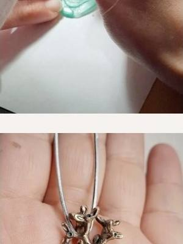
dom13dicGioielliCrea il tuo gioiello: cera persa in bronzodomenica 13 dicembre, 10:30–12:30Cuneo (CN) · da 50 €con Simona di Matteo per Atelier Crea-Arti dataa sceltaGioielliAnello in argento con pietra incastonataData a sceltaSan Salvario (TO) · 131 €con Spazio Incompleto Gioielli
dataa sceltaGioielliAnello in argento con pietra incastonataData a sceltaSan Salvario (TO) · 131 €con Spazio Incompleto Gioielli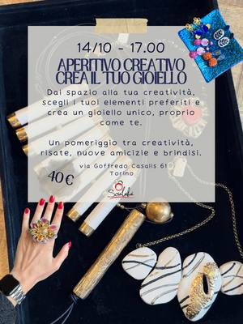
dataa sceltaCeramicaCorso di gioielli: porcellana e argillaData a sceltaCit Turin (TO) · 125 €con Scialabà